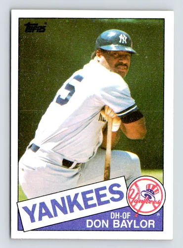

Don Baylor "Groove"
Career Highlights & Facts
(Facts are AI-generated and may require verification)
- Won the 1979 American League Most Valuable Player award while playing for the California Angels.
- Led the American League in hit-by-pitches during eight different seasons.
- Appeared in three consecutive World Series with three different teams from 1986 to 1988.
Would you like to find out more about Don Baylor?
Career Totals
| WAR | AB | H | HR | BA | R | RBI | SB | OBP | SLG | OPS | OPS+ |
|---|---|---|---|---|---|---|---|---|---|---|---|
| 28.5 | 8198 | 2135 | 338 | .260 | 1236 | 1276 | 285 | .342 | .436 | .777 | 118 |
Statistics via Baseball-Reference.com
The Original Clue